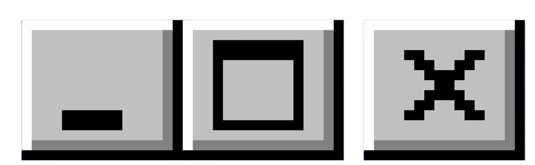

|
intimacy

|
Intimacy Cryptogram
Some days end, one long day followed me and ended years later at your feet, intimacy is a note I cannot understand, it usually doesn't come from touch,
I created intimacy with the lines of sand on the beach, and where did they go off to, after?
I made intimacy within the rhythms of your voice, often when you said the same word again and I let it stay there in the middle of the air without touch,
We locked ourselves in a glass room and you turned away from me and played the piano,
there is the question of what I did,
if I daydreamed,
or shifted in the chair.
Scaffolders
Scaffolders outside the building
smoke from 10 cigarettes
they build a city they understand,
I'm the one who doesn't.
what is the signal to begin?
In the morning we fly out of nearby windows,
brick homes along the street
I write about things I don't understand,
the things I do I stay quiet about.
I was raised by
a man standing on the street in the early morning
he's waiting for the truck to come
watching out for nothing.
|
|
|